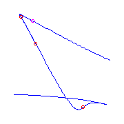
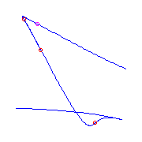
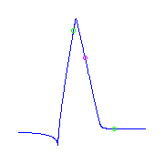

Previous: 5.11 Quintics with One Flex
Next: 5.13 Quintics With a Claw
Up: 5. Maximally Inflected
Quintics
5.12 Maximally Inflected Quintics With a Flat Flex
This page is under construction.
I do not know when or if it will be completed.
Also, we do not display any solitary points.
This file displays maximally inflected quintics with a flat flex, which is a
point of ramification of order 3.
The intent is to display one example of all such curves, but there a quite a
few of these curves, because there are many possibilities for the
remaining ramification, and for its placement.
The table below summarizes the possible types of ramification that can occur
in such a curve, and our symbol for each type.
The linked indices are to the spot in this file where curves with at most
that ramification are displayed.
Very ineresting is a movie.
Jump to that part of this file.
| Name | Index | Partition
| Germ | Symbol |
| Flex | (0,1,3) | 1 |
(s,s3) |
Red Circle |
| Cusp | (0,2,3) | 11 |
(s2,s3) |
|
| Planar | (0,1,4) | 2 |
(s,s4) |
Green Circle |
| Claw | (0,2,4) | 21 |
(s2,s4)
| |
| Flat Flex | (0,1,5) | 3
|
(s3,s5) |
Magenta Circle |
| Box | (0,3,4) | 22 |
(s3,s4) |
Blue Circle |
| Beak | (0,2,5) | 31 |
(s2,s5) | |
| | (0,3,5) |
32 |
(s3,s5) |
Maroon Circle |
|
|
Pictures of these germs are found here.
Additional ramification of type (0,3,5).
There is a unique curve (up to reparameterization) with one
ramification point of type (0,3,5), a
flat flex (0,1,4) and a flex.
It has 2 solitary points, indicated by the blue
circles.

Additional ramification of type (0,2,5), a beak.
Such curves exist with either a planar point or
two flexes.
For any placement of these ramification points, there is a unique curve.
There are two different isotopy classes of the placement of the flexes; either
they are consecutive, or they are not.
We display the curve with the planar point, and then two curves with flexes,
representing the different isotopy classes.


Additional ramification of type (0,3,4), a box
point.
There is a unique curve with a box
point and a cusp.
Additional ramification of type (0,1,5), a flat
flex.
There is a unique curve with three flat flexes.
If we have two flat flexes, then the remaing
ramification is either a planar point and a
flex (with the flex either between the two
flat flexes (on the left) or between the planar point and one of the flat
flexes (on the right) )
or three flexes, either consecutive (on the left) or not consecutive (on the
right).
Additional ramification of type (0,2,4), a claw.
There is a unique curve with two claws and one flat
flex.
If we have one claw and one flat flex, and a cusp,
then there will be a flex, and there is a unique curve
for each placement of the ramification.
The flex either is between the cusp and the
flat flex, or between the flat
flex and the claw, or between the claw and the cusp.
We display these three possibilities from left to right.
 We may have a planar point instead of the cusp,
again there is a unique curve for each placement of the ramification
and the flex either is between the
planar point and the flat
flex, or between the flat flex and the claw,
or between the claw and the planar point.
We display these three possibilities from left to right.
We may have a planar point instead of the cusp,
again there is a unique curve for each placement of the ramification
and the flex either is between the
planar point and the flat
flex, or between the flat flex and the claw,
or between the claw and the planar point.
We display these three possibilities from left to right.

 If we just have three flexes with the claw and the
flat flex, then either the flexes are connsecutive
(two pictures on the left), or they are not (the two pictures on the right).
For each placement of this ramification, there will be two curves.

If we just have three flexes with the claw and the
flat flex, then either the flexes are connsecutive
(two pictures on the left), or they are not (the two pictures on the right).
For each placement of this ramification, there will be two curves.


Additional ramification of type (0,2,3), a cusp.
There is a unique curve with one flat flex and
three cusps.
Clicking on this picture will display a movie of this curve, as two of the
flexes collide, creating a box point.
(The size of the movie is 70KB.)
We still have to draw the curves with one and two cusps and the remaining
ramification flexes.
Additional ramification of cusps and planar points.
There are two ways to place two planar points and
a cusp, either the planar points are consecutive
(on the left) or they are not (on the right).

There are still come curves to be drawn under this heading.
Additional ramification planar points.
There is a unique curve with three planar points.
We still have to draw the curves with one and two
planar points and the remaining
ramification flexes.
Additional ramification flexes.
There are five curves with a flat flex
and six flexes, which we still have to draw.
Previous: 5.11 Quintics with One flex
Next: 5.13 Quintics With a Claw
Up: 5. Maximally Inflected
Quintics